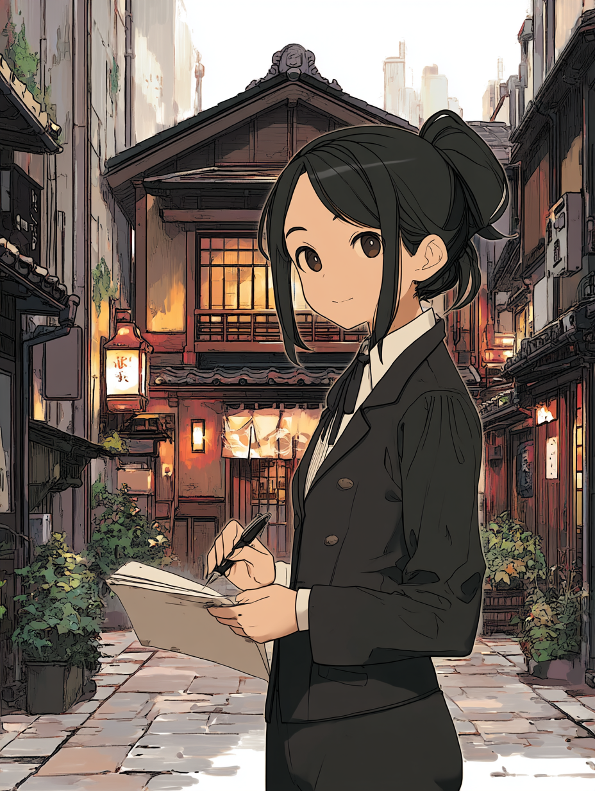
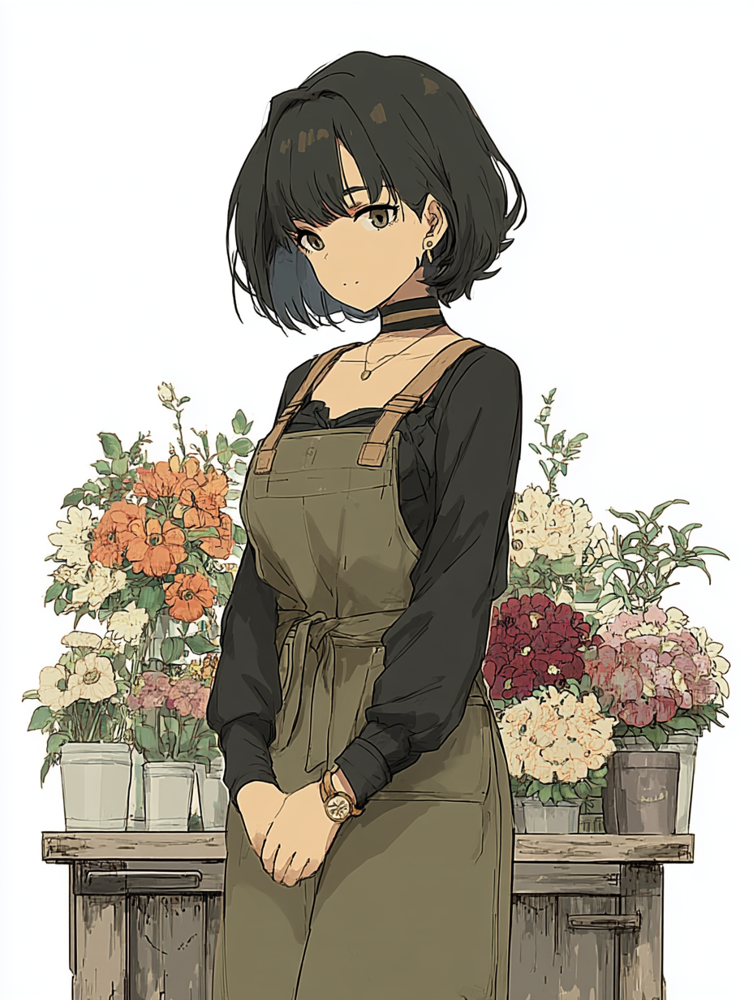
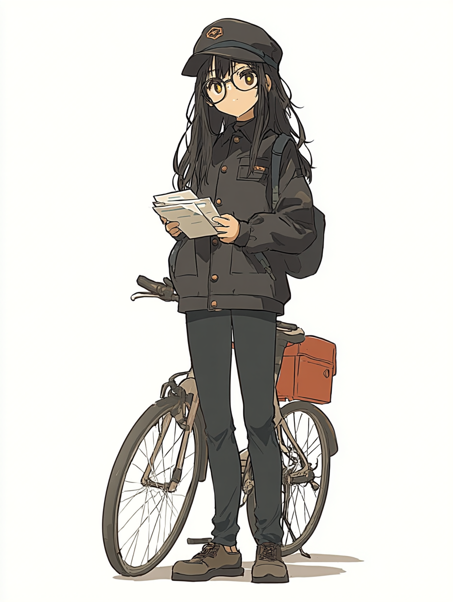
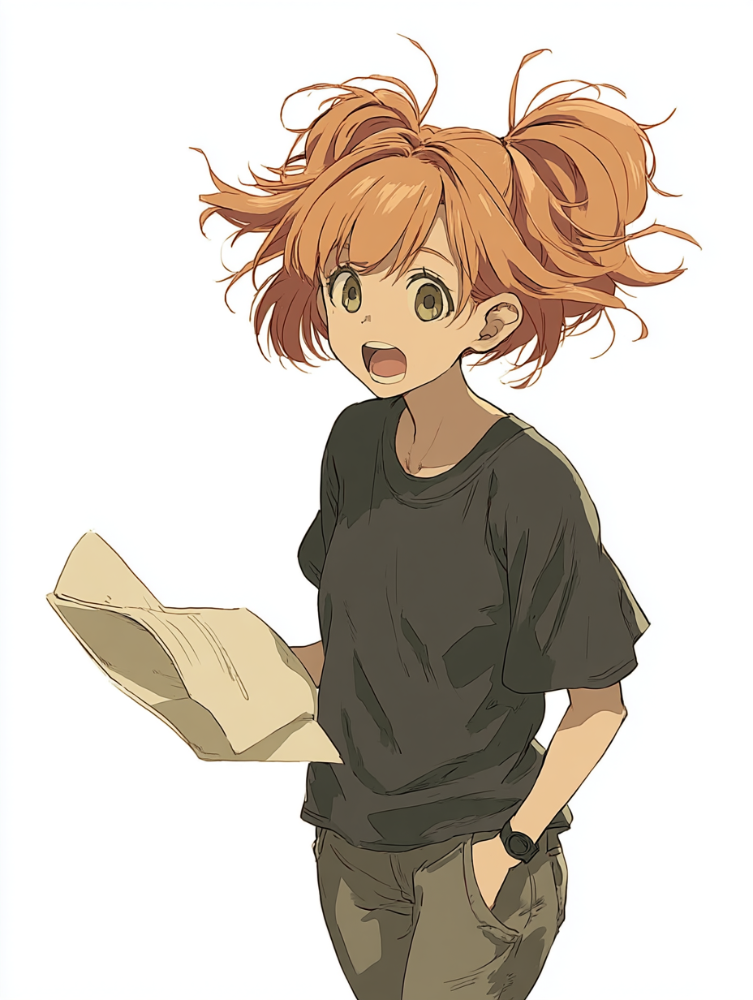
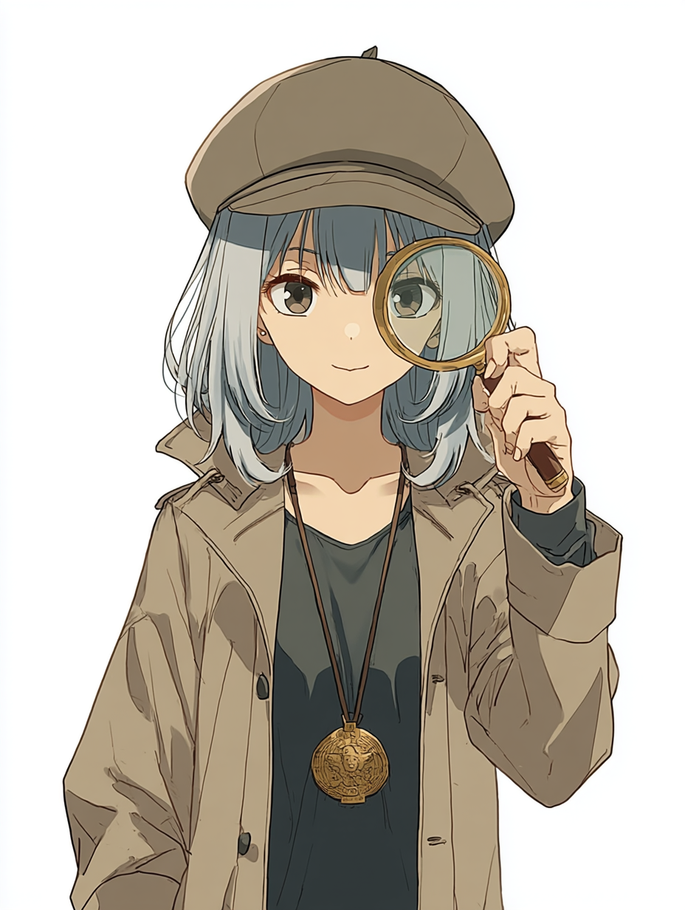

CHARACTERS
登場人物紹介

朱野 音九 あかの いんく / 22歳
代書屋いんくの主人公。恩師から受け継いだ万年筆を手に、人生の岐路に立つ人々の決意を書類という形に変えていく。静かで誠実、言葉少なだが、依頼人の本音を引き出す聞き上手。黒いリクルートスーツに後ろでまとめた髪が、いつもの装い。

十坂 春 とおさか はる
一木あやめの幼なじみ。明るくさっぱりした性格で、あやめの夢を誰よりも信じている。バンドでギターを担当し、あやめを東京へ送り出す。感情をストレートに表現するが、その言葉はいつも真剣だ。

五百川 乃亜 いおかわ のあ
音九の友人。郵便配達員のほか、いろんなアルバイトを掛け持ちして街をかけまわっている。黒縁メガネに黒髪ロング、大学生。どこにでも現れ、さりげなく誰かの助けになっている。

千種 琉夏 ちぐさ るか
明るく行動的な性格で、役者としての顔も持つ。誰かの人生の『役』に立てることを喜びとしている。

四十万谷 うの しじまや うの
代書屋いんくの上の階に住む高校生。普段は天然でマイペースだが、現場に立つと鋭い観察眼を発揮する自称名探偵。
各話の依頼人たち
それぞれの人生の岐路に立ち、音九のもとを訪れる人々。
詳しくは EPISODES をご覧ください。